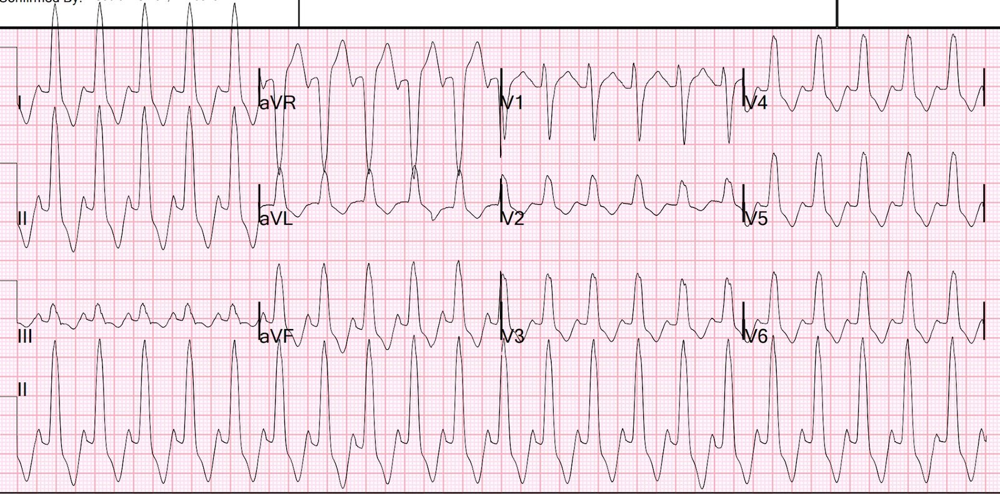
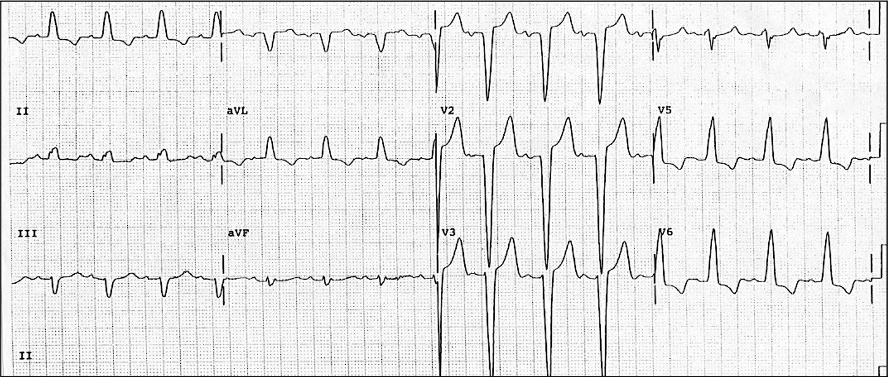
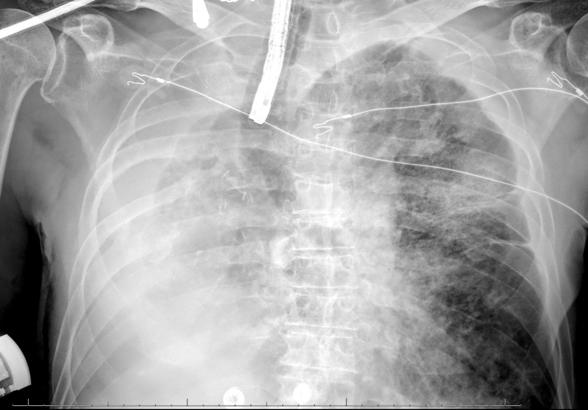
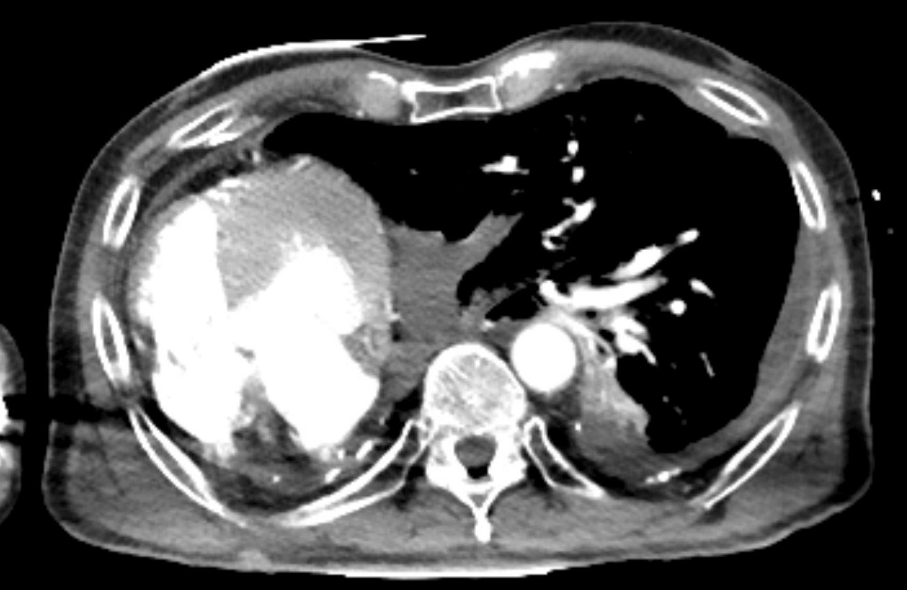
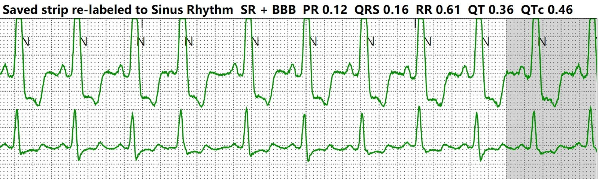
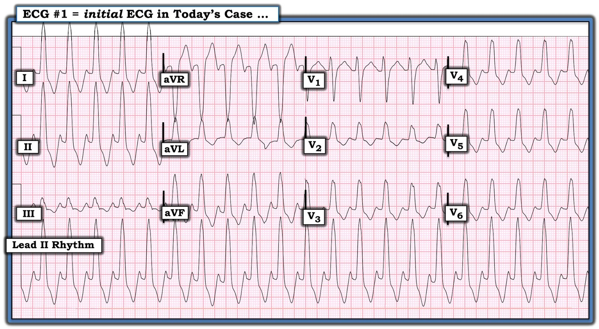
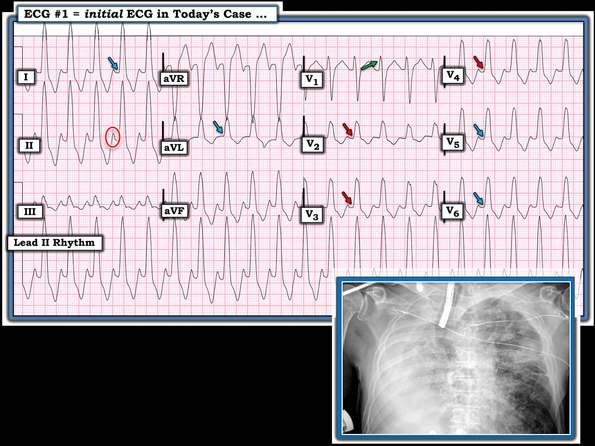

21/10/2023 — VT? Hay nhịp nhanh trên thất kèm dẫn truyền lệch hướng?
Bản dịch tiếng Việt của bài "VT? Or Supraventricular tachycardic rhythm with aberrancy?" – Dr. Smith’s ECG Blog. Giữ nguyên toàn bộ 8 hình ảnh của bản gốc.
Một bệnh nhân nam ngoài 70 tuổi nhập viện trong tình trạng suy hô hấp nặng.
Bệnh nhân có rối loạn ý thức nên được chuẩn bị đặt nội khí quản. Trước khi đặt nội khí quản, bệnh nhân bị tụt huyết áp.
Trên monitor, bệnh nhân có nhịp nhanh QRS rộng (wide-complex tachycardia).


Đã ghi được điện tâm đồ 12 chuyển đạo sau:
Bạn nghĩ gì?
Chẩn đoán phân biệt gồm nhịp nhanh thất (ventricular tachycardia), nhịp nhanh trên thất kèm dẫn truyền lệch hướng (supraventricular tachycardia with aberrancy) và nhịp nhanh xoang kèm dẫn truyền lệch hướng.
Có thể có sóng P ở chuyển đạo II. Nhưng đó cũng có thể chỉ là phần kéo dài của QRS, nên chưa chắc chắn là nhịp nhanh xoang. Có thể xác định chắc chắn bằng chuyển đạo Lewis. Dễ hơn nhiều là xem tần số có thay đổi từ thời điểm này sang thời điểm khác hay không, đặc biệt là có giảm khi điều trị hỗ trợ hay không.
QRS này không điển hình cho bất kỳ loại blốc nhánh nào, nên khả năng dẫn truyền lệch hướng thấp hơn nhiều. Vì QRS này hoàn toàn không giống bất kỳ dạng dẫn truyền lệch hướng thông thường nào, việc sốc điện chuyển nhịp là hợp lý.
Đây là một LBBB thông thường:


Trong LBBB, sóng R rộng một pha chỉ nên giới hạn ở các chuyển đạo bên trong blốc nhánh trái, như ở điện tâm đồ này.
Ở điện tâm đồ phía trên, có các sóng R một pha bắt đầu từ chuyển đạo V2 kéo dài đến tận V6.
Do huyết áp của bệnh nhân tụt cấp tính, bệnh nhân được sốc điện chuyển nhịp đồng bộ ở mức 200 J nhưng nhịp không thay đổi.
Nhưng tại sao điện tâm đồ này hoàn toàn không giống blốc nhánh trái?
Sau khi bệnh nhân được ổn định bằng điều trị hỗ trợ, tần số tim chậm dần, xác nhận đây là nhịp nhanh xoang.
Phát hiện một sẹo mở ngực ở ngực phải của bệnh nhân.
Đã chụp X-quang ngực:


Tim tôi nằm tận phía bên phải lồng ngực!
Nhóm điều trị đã tìm được một phần tiền sử trước đây: Khi xem lại hồ sơ, bệnh nhân có tiền sử blốc nhánh trái, vì vậy nhiều khả năng đây là nhịp nhanh xoang trên nền blốc nhánh trái. Bệnh nhân cũng có tiền sử ung thư phổi đã phẫu thuật cắt toàn bộ một phổi (pneumonectomy) và COPD. Biểu hiện lúc nhập viện phù hợp với một đợt cấp COPD nặng.
Đây là một lát cắt CT chụp sau đó cho thấy tim trong lồng ngực


Điều này giải thích phức bộ QRS rộng rất bất thường. Đó là một blốc nhánh trái bị biến dạng do vị trí tim bất thường rõ rệt.
Tần số tim chậm dần khi điều trị hỗ trợ.
Đây là một dải nhịp ghi sau đó:


Dải nhịp này xác nhận nhịp xoang

===================================
BÌNH LUẬN CỦA TÔI, bởi KEN GRAUER, MD (21/10/2023):
===================================
Thường rất khó xem lại hồ sơ của những ca phức tạp khi bạn không có bản tường thuật chi tiết, theo trình tự, về các sự kiện đã diễn ra. Đó chính là hoàn cảnh của tôi trong ca hôm nay — khi đầu tiên tôi được cho xem điện tâm đồ ở Hình 1, chỉ biết rằng người đàn ông khoảng 70 tuổi này nhập viện trong tình trạng suy hô hấp nặng.
- Thuần túy từ góc độ đọc điện tâm đồ — Bạn sẽ diễn giải nhịp hôm nay như thế nào?


SUY NGHĨ CỦA TÔI về điện tâm đồ ở Hình 1:
Điện tâm đồ ở Hình 1 — là một WCT (nhịp nhanh QRS rộng – Wide-Complex Tachycardia) đều với tần số ~130/phút.
- Nhìn vào điện tâm đồ ở Hình 1 — tôi không chắc liệu chúng ta có thấy hoạt động nhĩ hay không. Một mặt — sóng dương, nhọn thấy ở cuối mỗi sóng T tại chuyển đạo II có thể là một sóng P xoang — khi đó, nhịp sẽ là nhịp nhanh xoang tần số ~130/phút (trong vòng tròn ĐỎ ở chuyển đạo II của Hình 2, bên dưới).
- Mặt khác — chúng ta không có ranh giới rõ ràng giữa sóng dương, nhọn này và sóng T đứng trước nó — đặt ra câu hỏi liệu sóng này có thực sự là sóng P? – HAY là phần cuối dương của sóng T? — HAY là sự kết hợp của một sóng P với một phần cuối dương của sóng T đứng trước? Và nếu sóng nhọn này là phần cuối của sóng T (chứ không phải sóng P) — thì nhịp ban đầu hôm nay có thể là VT!
- LƯU Ý CỦA TÁC GIẢ: Theo kinh nghiệm của tôi — gần như luôn có một sóng âm dễ nhận ra xuất hiện trước phức bộ QRS ở chuyển đạo V1 khi nhịp là nhịp nhanh xoang kèm LBBB. Tôi không thấy điều này trên bản ghi ban đầu hôm nay — điều đó đơn giản có nghĩa là tôi không biết chắc nhịp là SVT (tức là nhịp nhanh xoang hoặc SVT vào lại) — hay — liệu nhịp có thể là VT.
- Điểm MẤU CHỐT: Phân biệt nhịp nhanh xoang kèm LBBB với VT là cực kỳ quan trọng — vì sốc điện chuyển nhịp đồng bộ sẽ được chỉ định nếu là VT ở bệnh nhân có tình trạng hô hấp và huyết động ở ngưỡng giới hạn này — nhưng lại chống chỉ định nếu nhịp là nhịp nhanh xoang. Đây không phải là một phân biệt lâm sàng dễ dàng trong ca hôm nay.
- Hình dạng QRS trong cơn WCT: Xét như một bản ghi đơn lẻ, đứng riêng khi không có thông tin bổ sung — hình dạng QRS không phù hợp với dẫn truyền kiểu LBBB (dù do LBBB có sẵn hay do dẫn truyền lệch hướng kiểu LBBB liên quan tần số). Đúng là các phức bộ QRS hoàn toàn dương ở các chuyển đạo bên là như mong đợi với dẫn truyền kiểu LBBB (các mũi tên XANH DƯƠNG trong Hình 2) — nhưng tôi chưa bao giờ thấy dẫn truyền kiểu LBBB tạo ra các phức bộ QRS hoàn toàn dương bắt đầu sớm từ chuyển đạo V2 và kéo dài đến tận V6 (các mũi tên ĐỎ ở các chuyển đạo V2,V3,V4 của Hình 2). Thay vào đó — hiếm khi thấy sóng R khởi đầu cao tới 6 mm ở chuyển đạo V1 khi có dẫn truyền kiểu LBBB (như mũi tên XANH LÁ mà ta thấy trong Hình 2) — và phần âm chiếm ưu thế của phức bộ QRS phải hiện diện và duy trì với dẫn truyền kiểu LBBB ít nhất cho đến chuyển đạo V3 — và thường là đến tận chuyển đạo V4 hoặc V5.
ĐIỀU CỐT LÕI: Nếu chỉ được yêu cầu đánh giá điện tâm đồ 12 chuyển đạo ban đầu trong ca hôm nay (mà không được xem bất kỳ bản ghi nào khác) — tôi sẽ ước tính khả năng theo thống kê rằng nhịp WCT đều này, không có sóng P xoang phân định rõ — và với hình dạng QRS như ở Hình 2 — là VT với xác suất ít nhất 95%.
- Tìm được một bản ghi trước đây của bệnh nhân hôm nay khi đang nhịp xoang có QRS giãn rộng — có thể giúp làm sáng tỏ NẾU hình dạng QRS khi nhịp xoang giống hệt như ở Hình 2 (khi đó — bản ghi nền có thể cho thấy bệnh nhân vốn đã có một dạng IVCD bất thường từ trước tới nay).
- Điểm MẤU CHỐT: Mọi thứ thay đổi ngay khi bạn thấy phim X-quang ngực của bệnh nhân này (ảnh chèn ở phía dưới Hình 2). Bệnh nhân suy hô hấp nặng này rõ ràng có đủ bất thường trên X-quang ngực để có thể giải thích một cách hợp lý hình dạng QRS hết sức bất thường ở Hình 2 (trong khi ở một bệnh nhân không có bệnh phổi lan rộng như vậy — hình dạng QRS như thế đơn giản là không phù hợp với dẫn truyền kiểu LBBB).
BÀI HỌC CẦN RÚT RA:
“Tin tốt” là khi tình trạng lâm sàng của bệnh nhân cải thiện — các sóng P xoang dễ nhận ra đã hiện rõ trong ca hôm nay khi tần số tim chậm lại. Điều này xác nhận nhịp xoang kèm QRS giãn rộng do một rối loạn dẫn truyền rất bất thường. Như vậy, ca hôm nay củng cố những nhận thức sau:
- Đánh giá bằng điện tâm đồ các nhịp WCT đều không có sóng P xoang phân định rõ là một môn khoa học không hoàn hảo. Về thống kê, trong các trường hợp không chọn lọc — khoảng 80% các nhịp như vậy hóa ra là VT. Con số này tăng lên ~90% ngay cả trước khi bạn nhìn vào điện tâm đồ, nếu nhịp WCT đều đang xét là ở một người lớn “có tuổi” và bệnh nhân có tiền sử bệnh tim nền.
- Các tiêu chuẩn bổ sung có thể giúp tinh chỉnh ước tính 90% này. Trong đó có đánh giá trục mặt phẳng trán trong cơn WCT (tức là khả năng VT tăng lên nhiều nếu QRS trong cơn WCT âm hoàn toàn hoặc ở chuyển đạo I hoặc ở chuyển đạo aVF).
- Đánh giá một số đặc điểm đơn giản về hình dạng QRS trong cơn WCT có thể đặc biệt hữu ích. Ví dụ — khả năng VT tăng lên nhiều nếu hình dạng QRS trong cơn WCT không phù hợp với một dạng rối loạn dẫn truyền đã biết nào đó (Xem Bình luận của tôi trong bài ngày 5 tháng Năm năm 2020 trên Dr. Smith’s ECG Blog để biết thêm về “Quan điểm của tôi” liên quan đến các tiêu chuẩn phân biệt SVT với VT).
- Tìm được một bản ghi trước đây của bệnh nhân khi đang nhịp xoang có QRS giãn rộng có thể ủng hộ sự hiện diện của một dạng rối loạn dẫn truyền có hình dạng bất thường sẵn có từ trước, qua đó xác nhận đây là một nhịp SVT.
- Và khi nghi ngờ nhịp nhanh xoang (dù có hình dạng QRS bất thường) — một số biện pháp đơn giản có thể đưa ra câu trả lời! Hãy in thường xuyên các bản ghi liên tiếp! Đặc điểm MẤU CHỐT của nhịp nhanh xoang — là tần số nhịp nhanh xoang sẽ thay đổi theo thời gian, tùy theo tình trạng lâm sàng của bệnh nhân đang tốt lên hay xấu đi. Ví dụ, trong ca hôm nay — sự cải thiện lâm sàng nhẹ đã làm tần số tim chậm lại vừa phải — và điều đó hóa ra đủ để giờ đây thấy được ranh giới đủ rõ giữa sóng P và sóng T, chứng minh rằng nhịp thực sự là nhịp nhanh xoang ngay từ đầu, nhưng với hình dạng QRS rất bất thường.
- Cân nhắc cuối cùng: Khi gặp một hình dạng QRS bất thường ngoài dự đoán — Hãy đến bên giường và NHÌN bệnh nhân! Hãy suy nghĩ “vượt ra ngoài khuôn khổ” về những lý do tiềm năng khác có thể giải thích hình dạng bất ngờ như vậy (tức là nhiễu do mạch đập (pulse-tap artifact); thể trạng bất thường, băng quấn ngực hoặc ống dẫn lưu ngực — hoặc, như trong ca hôm nay — bệnh lý phổi nặng có thể làm thay đổi bản ghi điện tâm đồ).

